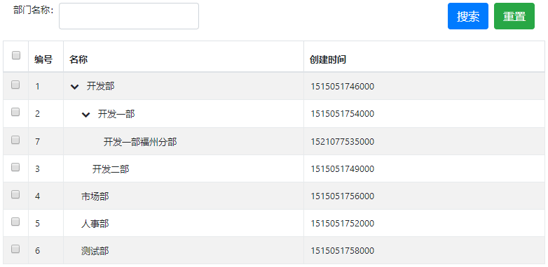

借助树形表格插件jQuery TreeGrid，我们可以以表格的形式来展现那些带有层级关系的数据，比如部门上下级，菜单表等。jQuery TreeGrid的官方地址为：http://maxazan.github.io/jquery-treegrid/。由于这里的使用环境为bootstrap，原始的jQuery TreeGrid插件显得不是那么的灵活和美观，为了在bootstrap中无缝的使用该插件，这里引用了经过二次封装的jQuery TreeGrid插件jquery.treegrid.extension.js，作者为：http://www.cnblogs.com/landeanfen/p/6776152.html。
引入依赖
首先先引入bootstrap相关的依赖：
1 | <link rel="stylesheet" href="https://cdn.bootcss.com/bootstrap/4.0.0/css/bootstrap.min.css"> |
然后引入jQuery TreeGrid依赖以及jquery.treegrid.extension.js ：
1 | <!-- jquery.treegrid --> |
因为bootstrap没有自带图标组件，为了下文的使用，这里引入font-awesome:
1 | <link href="https://cdn.bootcss.com/font-awesome/4.7.0/css/font-awesome.css" rel="stylesheet"> |
数据
使用的数据表：
1 | -- ---------------------------- |
后端框架为Spring Boot + MyBatis（通用mapper和pagehelper插件），获取数据的具体细节这里不再描述，可参考文末的源码。
使用
编写一个简单的页面：
1 | <form class="form"> |
jQuery TreeGrid插件的使用：
1 | var ctx = [[@{/}]]; |
参数说明如注解所示，其中expanderExpandedClass和expanderCollapsedClass为展开和缩起的图标，这里使用的是文章开始引入的font-awesome。
后端返回的JSON数据如下所示：
1 | [{ |
页面显示效果如下： 
其实，在实际使用中我们并不需要配置那么多参数，查看jquery.treegrid.extension.js源码可发现，其默认参数为：
1 | $.fn.bootstrapTreeTable.defaults = { |
所以使用的时候只需配置几个我们关注的参数即可：
1 | $('#deptTreeTable').bootstrapTreeTable({ |
jquery.treegrid.extension.js还封装了一些方法：
1 | $.fn.bootstrapTreeTable.methods = { |
比如获取选中行的数据可使用getSelections：
1 | $("#deptTreeTable").bootstrapTreeTable("getSelections"); |
附录
源码链接：https://drive.google.com/open?id=1fgYRpD5CNCn4gj06_MiLm-g2fCjsSYtk